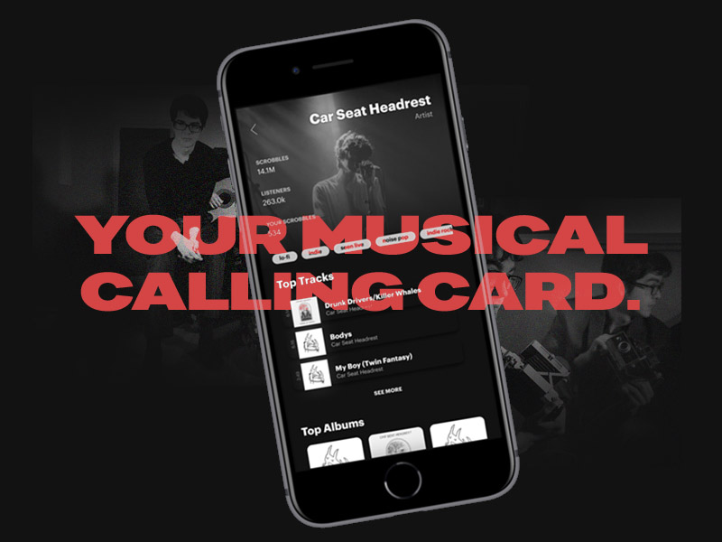
This is a work-in-progress! (My Muji sketchbook is suffering!) Have other thoughts on the beloved music platform? Message me and let's talk about Last.fm!
Last.fm is the music search & discovery network. In a time of streaming sites galore, its ability to aggregate and engage users over music stays relevant. As mobile usage grows, I thought of revamping the aged Last.fm application to build a proper space for the music we love.
Context
The music platform for diehards
The beauty of Last.fm is that it puts discovery, community, and data together. Around for decades but more relevant than ever in a disjointed musicspace, I needed to visit it.
Last year, Spotify Wrapped told me I totaled 140,000 minutes of listening (excluding my YT + local collection). As a music fan, I fell in love with the product: it understands my activity over time, connects me with over buffs, and helps me find new new tracks.
Last.fm brands itself as your "musical calling card". However, the mobile application doesn't reflect this yet. I set out to design a mobile experience for Last.fm: the go-to place for music from everywhere should be accessible anywhere.
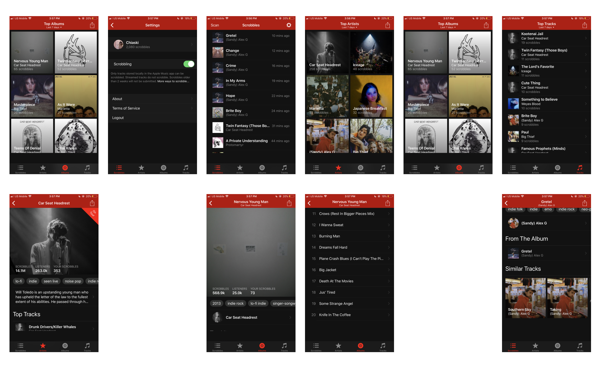 Present Last.fm mobile appAt present, the Last.fm mobile app shows you your aggregated music ("scrobble") history and some stats. Let's see what's missing.
User Comments on Last.fm
With these comments, I thought exploring a design that focused on bettering stat and history features—a key core part of Last.fm's enjoyability today.
Problem Identification
Missing features 👎
No existing experiences for listening history, discovery, or socials
No mobile onboarding 👎
This alienates potential mobile-first listeners
Missing integrations 👎
Users aren't informed of where the app syncs from
Minimal track information 👎
Unlike the web version, mobile has no biographies, lyrics, or info
I talked to existing Last.fm users and explored Last.fm alternatives to explore issues with the current mobile experience. What I found aligned with my personal experiences: the Last.fm app is underwhelming, it displays the raw data, but doesn't synthesize it.
What does Last.fm serve when it tracks music you're playing on your phone, without letting you dive into that history? Tracking and listening history would become a priority.
As we go mobile: users should be able to breakdown their music history and pull it up as needed.
New Architecture & Map
For this iteration of the redesign, I prioritized building an onboarding flow, showcasing listening history and statistics, reworking the way music information is presented, and introducing the social aspects of the site on mobile through profiles.
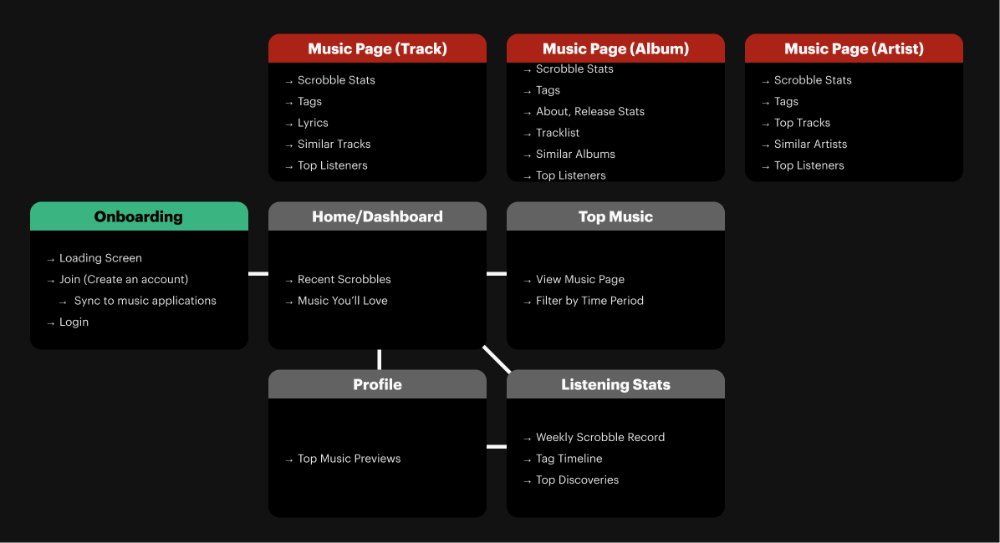 Mapping for a proposed redesign, first prioritizing the addition of stats, discovery, and minimal social features (profiles)Prioritizations
Universality 🌎
Remove complexity on web and make navigation like flipping through aa record collection
Immediacy 🗂
Focus on the music calling card aspect of the app, or discover at a glance
Data-driven 📊
Synthesize info on the app for users to understand
Constraints—instead of importing all web functions to mobile, I chose to constrain the features/screens to bring in, prioritizing features that users wanted most.
Key Assumption—Last.fm's edge is in its data. It is empowering to listeners when they can understand their behavior—no other music service understands this as well.
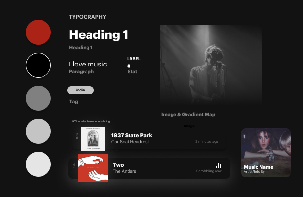 A selection of the design assets for the redesign that I began reusing while putting together mid-fi screens
Asset Library
In these designs, you'll notice a heavy use of images. One impactful feature on Last.fm is community-voted images that overlay music pages. It's memorable and beautiful: I wanted to keep this level of customization and intimacy in.
OVERVIEW
A redesigned musicscape
To begin, I built lo-fidelity mocks for the home, top listening stats and music (artist, album, track) screens. The following are mid-fidelity looks into my proposed redesigns.
Last.fm is an incredible product that has the potential to expand its existing demographic and userbase (largely diehard music fans, extensive listeners) into the masses. By pushing on screens and nudging the user towards discovery, I wanted to be intentional about including features that could build on this service.
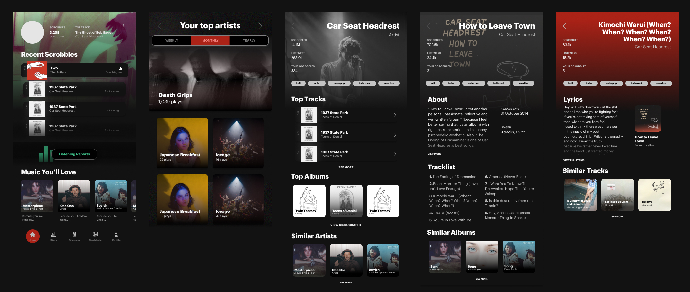 Dashboard, top artist, and music (artist, album, track) screens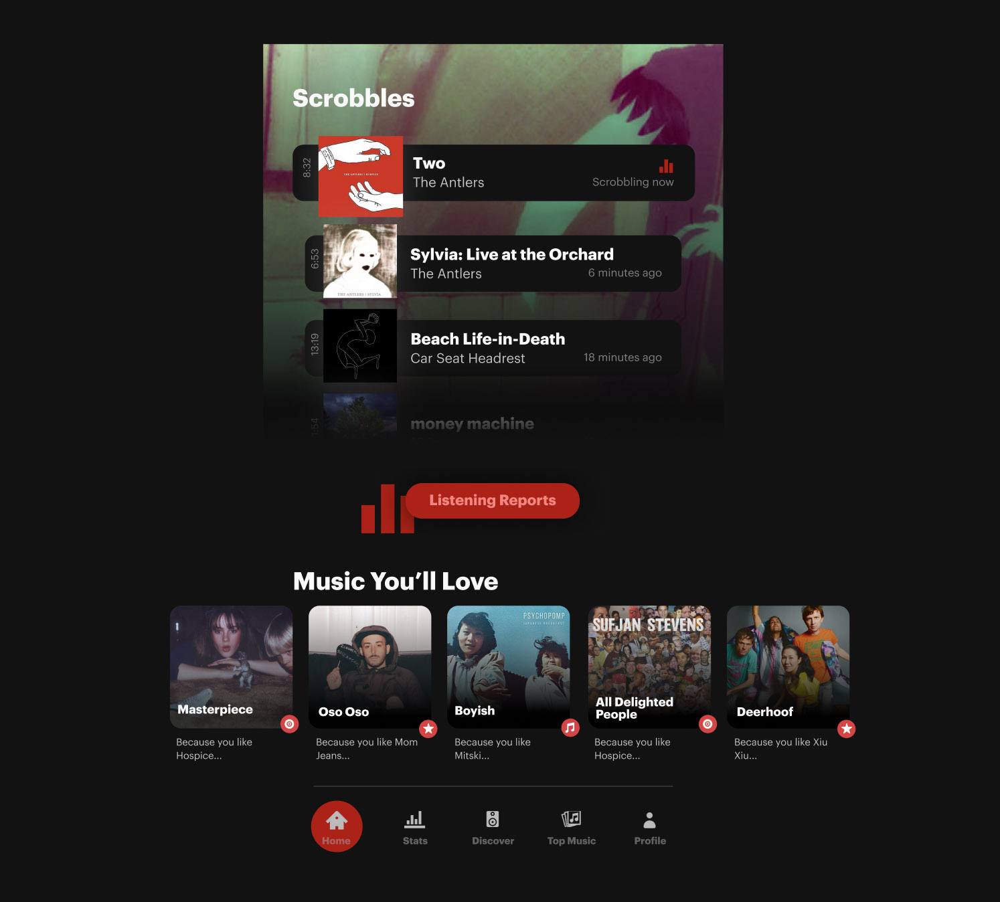
Discover and own your music.
A dashboard with discovery lets users focus on understanding and expanding their music.
In addition to scrobble history on your homepage, recommendations take stage as music you love is recommended to the user. Simple and straight to discovery, users can track their own activity and expand it with ease.
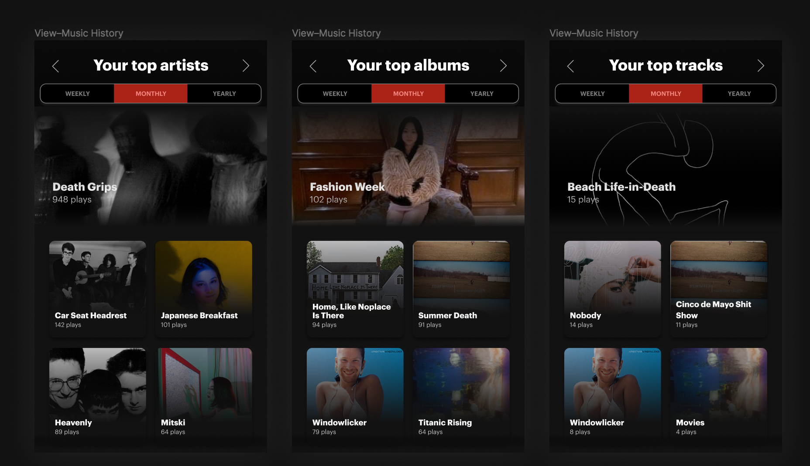
Your listening activity at a glance.
Swipe interactions to go through top music at different time levels.
A new approach at music history gives users the ability to see their musical activity at a glance with an intuitive swipe gesture.
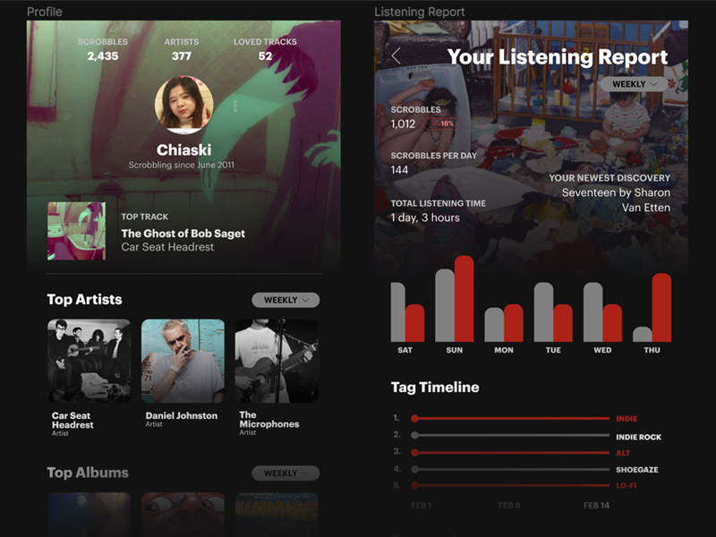
Your calling card & stats.
Easily look at a user's musicality with customized listener reports and profile views.
Spaces for user profile and listening reports give mobile users another layer of insight to their activity, and help them connect with other music fans. Social engagements begin and end with music.
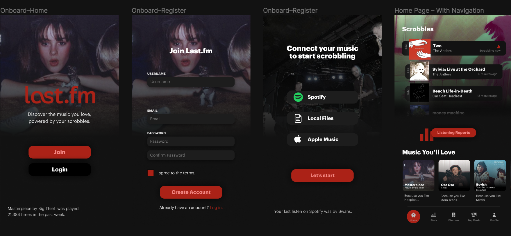
The experience starts on mobile.
A flow to capture mobile listeners.
Now music fans can begin exploring their tastes and history right from mobile. On-the-go music fans can spread their love for music, and have their friends hop onto the platform too.
With these changes, I would love to look into metrics around the usage of discovery features to find potential areas for expansion: are users tapping onto more music than before? How does a mobile listening report wwith stats on their activity change the way they act?
Take a closer look at how these screens were crafted with music and love, plus see them in action!
Process
Building ground for sound
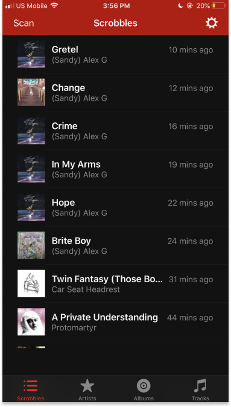 Present app home
NEW HOME—On the new home, recent tracks are more condensed but offer users a direct way to visit their listening reports and discovers.
Top Music
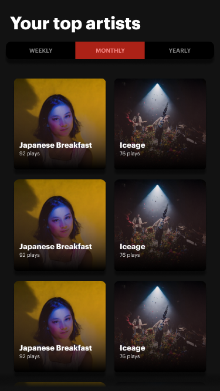 Present top music
TOP MUSIC—A swipe interaction easily lets users switch between their top artists, albums, and tracks.
With history levels present at the top, users can easily see their activity through time.
Music Screens
ARTIST PAGE—Emphasis on discovery and providing a concise view of an artist's music.
On the artist page, I opted out of displaying the bio field that the website has due to potential inconsistencies.
ALBUM PAGE—The redesign emphasizes the need-to-knows: release date, length, and an expandable about.
A tracklist offers an overview of the songs featured on the album; discovery follows at the end of the page.

TRACK PAGE—The background color on the track shifts based on the originating album. Lyrics are available in full through a modal.
Introducing User Profiles
PROFILE PAGE—There was previously no profile page on mobile. Now, it's a social space to instantly see a user's top music, and engage with them through a shoutbox. (Who calls it that anymore?)
Other potential features for this space are neighbors (users with similar music tastes to you) and more details covering play counts & listener statistics.
These profiles focus on music—at a glance, a snippet of a user's activity and history, week to week.
As part of our "musical calling card" design, I wanted all music stats to be easily compiled in the profile screen.
Listening Stats
The listening report page gives users a glimpse into their history.
The reports are filtered by week, month, or year: with immediate scrobble counts, day views, overlaid on their top discovery of the week.
- Scrobble Counts displayed as bars encourage users to listen even more than previous weeks.
- Tag Timeline shows the diversity in music taste over time, and highlights the user-generated tags on Last.fm.
- Discoveries show users their top listens throughout the week.
- A listening clock provides a new glance into user activity.
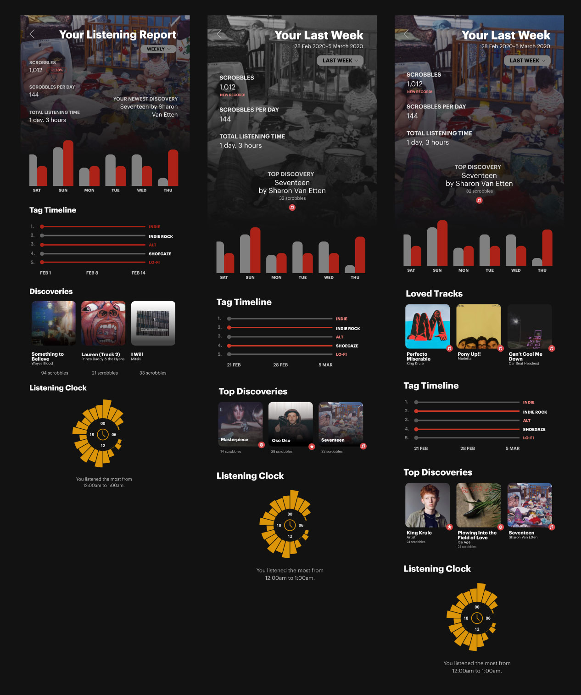
Onboarding: Building a mobile onboarding experience
The lack of an onboarding experience on the present app presents a huge opportunity area to hit the mobile-first demographic.
Visually, music is highlighted to hook users into syncing and signing up. As they connect services, background overlays shift to the user's loves—showing how it truly revolves around user actions.
Next Steps
As a product, Last.fm has a dwindling userbase and desperately needs to be the best at its many developed features over the years. To me and in this redesign, that was how in an age of mobile streaming over dozens of services: it connected and made sense of everything, empowering me as a listener by letting me know the data behind my behavior.
Instead of falling into a trap of underused prompts or spaces, I'm interested in seeing how the dead simple edge as a musical calling card can lead to everything else: discovery, engagement, and more streams. I'm certain there's power in these building blocks even if the mobile redesign doesn't have the entire web featureset: there's already so much we can get from these numbers and materials. They're simply universal to every listener.
- Going social ❔
This design only featured user profiles as a beginning engagement space. If put into action, it would be interesting to observe data on how users engage with one another—especially while only currently prompted by music pages. - Listening activity ❔
With the redesign, it would be interesting to capture how much more active listeners are. Are they only checking on Last.fm to see their latest activity? Do their behaviors change now that there's more numbers and customization that reflect their listens?
Again, all of this is still a work-in-progress. Let me know what you think, or better yet—let me know how you listen.
Want to see iterations and more details?